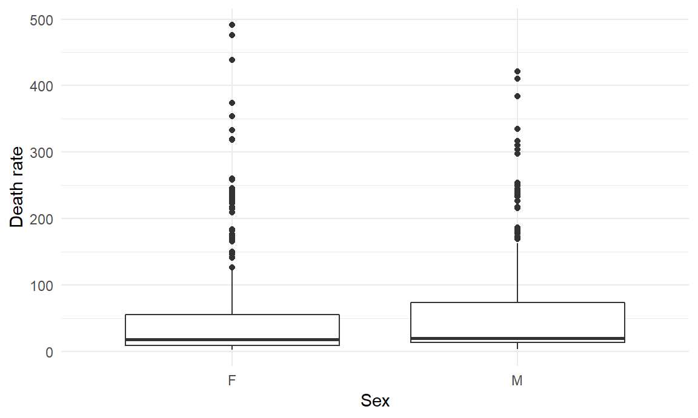
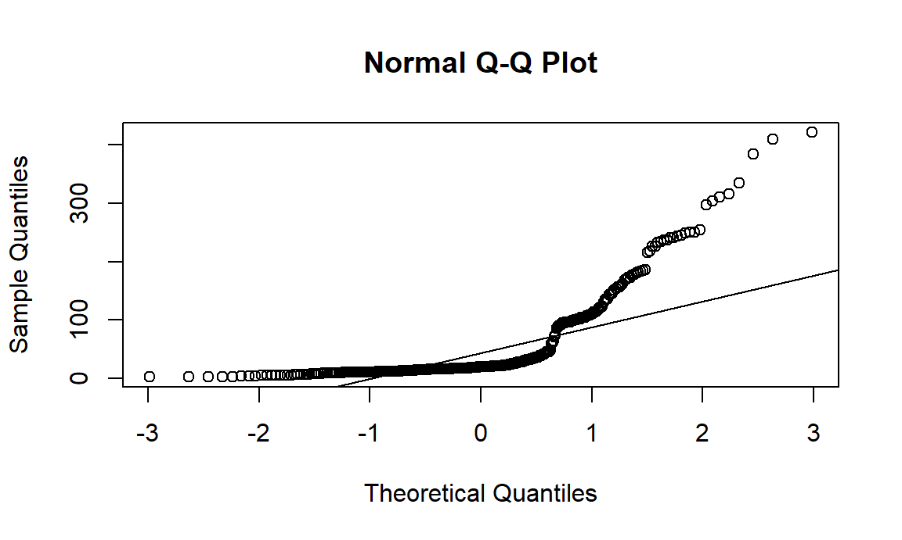
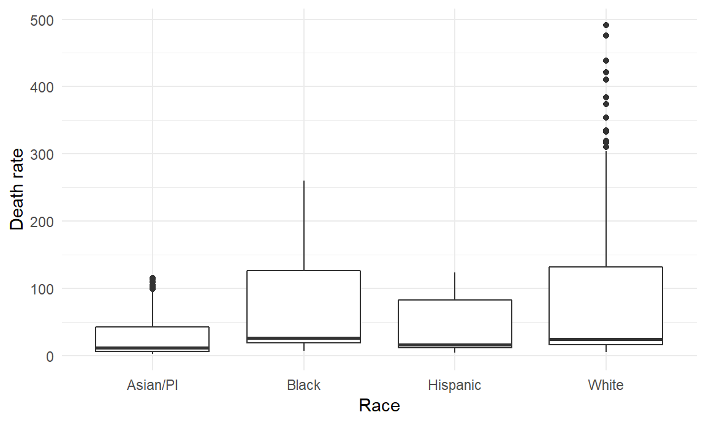
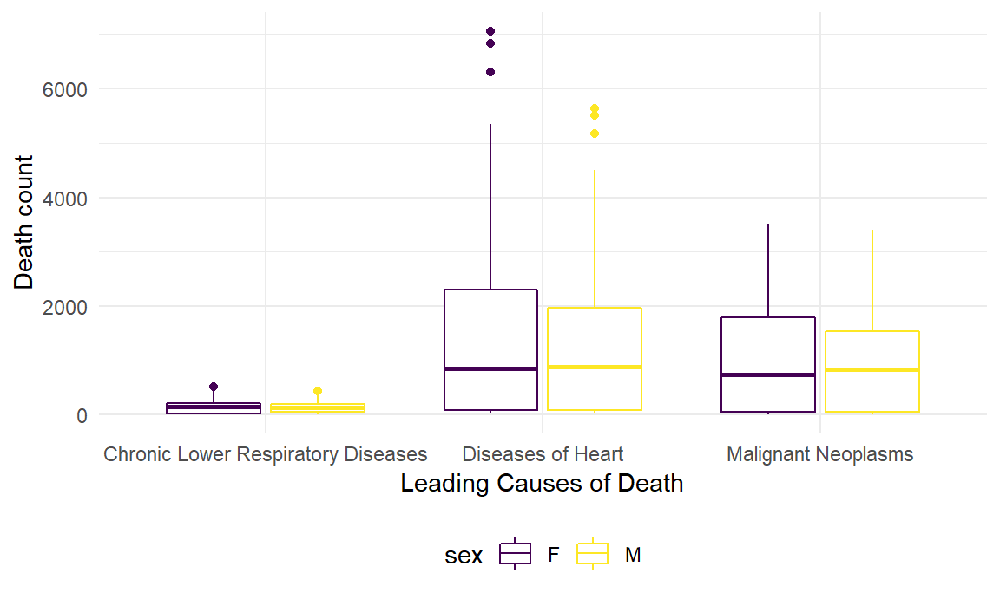
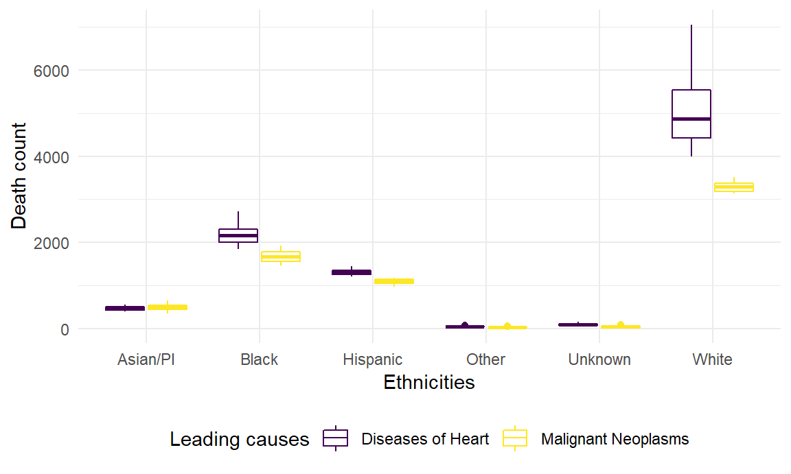

Analysis
Leading Causes of Death
What are the leading causes of death in the US?

- It appears that the top 2 leading causes of death in the U.S. (#1 Diseases of heart and #2 Malignant neoplasms) remained the same from 1999 to 2017 with some variations in the rest of the list.
What are the leading causes of death in NYC?

- It appears that the top 2 leading causes of death in New York City (#1 Diseases of heart and #2 Malignant neoplasms) remained the same from 2007 to 2014 with a lot of variations in the rest of the list.
- This high variability in the total death count for other causes of death could be due to unique epidemiologic factors in New York City or changes in the causes of death that were measured throughout the years in New York City.
Changes in the Leading Causes of Death
How has the death count of top leading causes changed over the years in the US?

- It appears that from 1999 to 2017, deaths due to malignant neoplasms in the U.S. showed a steadily increasing trend, while deaths due to diseases of heart showed a declining trend initially but started increasing again in recent years. Deaths due to cerebrovascular diseases remained relatively stable throughout the years.
How has the death count of top 2 leading causes changed over the years in NYC?

- It appears that from 2007 to 2014, deaths due to malignant neoplasms in NYC also showed an increasing trend but the change is not as drastic as in the nationwide plot, while deaths due to diseases of heart showed a declining trend, similar to the U.S. plot.
- We originally wanted to show changes in top 3 leading causes for NYC as well similar to the US time series plot, but a lot of the data was fragmented (e.g. not available for all the years) for causes other than “All Other Causes” and we didn’t think it was meaningful to include “All Other Causes” as one of the top causes for this plot, so we decided to just include “Malignant Neoplasms” and “Diseases of Heart”.
Racial and Sex Differences in NYC Mortality
How have the top 2 leading causes of death changed for each race in NYC?

- It appears that the general trends in the top 2 leading causes in NYC varied by race/ethnicity. One noticeable contrast that stands out is that deaths due to malignant neoplams seem to be on a steeper increasing trend for Asians/Pacific Islanders and Other race/ethnicity in NYC unlike for rest of the ethnicity groups.
- Another noticeable difference is that deaths due to diseases of heart seem to be on an increasing trend for Other race/ethnicity in NYC unlike for rest of the ethnicity groups.
Are there differences in the leading causes of death between men and women in NYC?

- While there seem to be some visible gender differences in these leading causes of deaths in NYC, it is unclear whether these differences are statistically significant solely based on these plots. We further investigated these differences in our statistical analyses section below.
Statistical Analyses
Is there a statistically significant difference in death rates between men and women in New York City?
Summary statistics
| sex | variable | n | min | max | median | iqr | mean | sd | se | ci |
|---|---|---|---|---|---|---|---|---|---|---|
| F | death_rate | 354 | 2.4 | 491.4 | 17.45 | 46.900 | 51.401 | 78.049 | 4.148 | 8.158 |
| M | death_rate | 354 | 2.8 | 421.0 | 20.00 | 59.625 | 55.477 | 75.024 | 3.987 | 7.842 |
Visualization

Assumptions
| sex | variable | statistic | p |
|---|---|---|---|
| F | death_rate | 0.6276062 | 0 |
| M | death_rate | 0.6597610 | 0 |

From the boxplot visualization and the p-values (< 0.05) associated with the The Shapiro–Wilk test, there is evidence that the data from both the sex groups is not normally distributed. This is also evident from the qqplot above.
Since the normality assumption has been violated, the Wilcoxon rank sum test (non-parametric) will be performed.
Test
| .y. | group1 | group2 | n1 | n2 | statistic | p | p.signif |
|---|---|---|---|---|---|---|---|
| death_rate | F | M | 554 | 540 | 53875 | 0.00125 | ** |
p-value = 0.00125 < 0.05
Report
The respective median death rates for male and female groups are as follows: 20 and 17.45. Based on the Wilcoxon rank sum test result, we have evidence to state that there is a statistically significant difference in death rates between men and women in New York City (p = 0.00125).
Is there a statistically significant difference in death rates across different ethnicities in New York City?
Summary statistics
| race_ethnicity | mean | sd | median | IQR |
|---|---|---|---|---|
| Asian/PI | 27.31356 | 32.50134 | 11.4 | 36.300 |
| Black | 65.94663 | 74.79932 | 26.1 | 107.375 |
| Hispanic | 35.85876 | 38.89141 | 16.0 | 71.400 |
| Other | NA | NA | NA | NA |
| Unknown | NA | NA | NA | NA |
| White | 84.74261 | 115.18831 | 24.6 | 116.200 |
Since the “Other” and “Unknown” categories of race don’t have any associated death rates, these categories have been filtered out.
Visualization

One-way ANOVA test
| Effect | DFn | DFd | F | p | p<.05 | ges |
|---|---|---|---|---|---|---|
| race_ethnicity | 3 | 704 | 23.428 | 0 | * | 0.091 |
p-value = 1.83e-14 < 0.05
At 0.05 significance level, we reject the null hypothesis and conclude that there is a significant difference in death rates across different ethnicities, in New York City.
Multiple Comparisons
A Tukey pairwise-comparisons test is performed to account for multiple comparisons
Tukey multiple comparisons of means
95% family-wise confidence level
Fit: aov(formula = death_rate ~ race_ethnicity, data = anova_df)
$race_ethnicity
diff lwr upr p adj
Black-Asian/PI 38.633070 18.644324 58.62182 0.0000048
Hispanic-Asian/PI 8.545198 -11.471682 28.56208 0.6900543
White-Asian/PI 57.429054 37.383762 77.47435 0.0000000
Hispanic-Black -30.087872 -50.076618 -10.09913 0.0006691
White-Black 18.795984 -1.221215 38.81318 0.0746105
White-Hispanic 48.883857 28.838564 68.92915 0.0000000From the above table, it can be inferred that there was a significant difference in death rates for the following pairs: Black and Asian/PI, White-Asian/PI, Hispanic-Black, White-Hispanic.
Assumptions
Homogeneity of variances
| df1 | df2 | statistic | p |
|---|---|---|---|
| 3 | 704 | 18.61912 | 0 |
Levene’s test was performed to check for the homogeneity of variances assumption. Based on the p-value, it can be inferred that there is no homogeneity of variances in different ethnicities.
Normality
Shapiro-Wilk normality test
data: mod_residuals
W = 0.7833, p-value < 0.00000000000000022Since the p-value < 0.00000000000000022, it can be assumed that the residuals are not normally distributed. Therefore, a Kruskal-Wallis rank sum test will be performed because the assumptions of one-way ANOVA have been violated.
Kruskal-Wallis rank sum test
Kruskal-Wallis rank sum test
data: death_rate by race_ethnicity
Kruskal-Wallis chi-squared = 117.22, df = 3, p-value <
0.00000000000000022Report
Based on the Kruskal-Wallis rank sum test result, we have evidence to state that there is a statistically significant difference in death rates across different ethnicities in New York City (p-value < 0.00000000000000022).
Are there significant differences in the leading causes of death between men and women in NYC?
Summary statistics
| leading_cause | sex | count | mean | sd | median |
|---|---|---|---|---|---|
| Chronic Lower Respiratory Diseases | F | 45 | NA | NA | NA |
| Chronic Lower Respiratory Diseases | M | 43 | NA | NA | NA |
| Diseases of Heart | F | 48 | 1640.667 | 1992.524 | 846.0 |
| Diseases of Heart | M | 48 | 1433.312 | 1633.663 | 877.5 |
| Malignant Neoplasms | F | 48 | 1122.438 | 1181.971 | 735.5 |
| Malignant Neoplasms | M | 48 | 1093.542 | 1120.950 | 835.0 |
A slight inequality can be observed in the sample size per group.
Visualization

Two-way ANOVA test
Anova Table (Type III tests)
Response: deaths
Sum Sq Df F value Pr(>F)
(Intercept) 2791001 1 1.6904 0.1947
leading_cause 82720630 2 25.0507 0.0000000001077 ***
sex 553642 1 0.3353 0.5630
Residuals 439182875 266
---
Signif. codes: 0 '***' 0.001 '**' 0.01 '*' 0.05 '.' 0.1 ' ' 1Two-way ANOVA test with interaction effect
Anova Table (Type III tests)
Response: deaths
Sum Sq Df F value Pr(>F)
(Intercept) 1302849 1 0.7841 0.3767
leading_cause 47177320 2 14.1960 0.000001394 ***
sex 10052 1 0.0060 0.9381
leading_cause:sex 508347 2 0.1530 0.8582
Residuals 438674528 264
---
Signif. codes: 0 '***' 0.001 '**' 0.01 '*' 0.05 '.' 0.1 ' ' 1At 0.05 significance level, the following inferences can be made based on the p-values given above:
- The leading causes of deaths (Diseases of Heart, Malignant Neoplasms, Diabetes Mellitus and Chronic Lower Respiratory Diseases) are associated with significant death counts in the New York City (p = 0.000001394).
- The sex variable and the interaction term (sex and leading causes of death variable) don’t have any significant association with death counts in New York City
Assumptions
Homogeneity of variances
| df1 | df2 | statistic | p |
|---|---|---|---|
| 5 | 264 | 14.53361 | 0 |
Levene’s test was performed to check for the homogeneity of variances assumption. Based on the p-value, it can be inferred that there is no homogeneity of variances in the observed groups.
Normality
Shapiro-Wilk normality test
data: mod_residuals_2
W = 0.85107, p-value = 0.000000000000001976Since the p-value = 0.000000000000001976, it can be assumed that the residuals are not normally distributed. Therefore, a Aligned Rank Transformed ANOVA will be performed because the assumptions of two-way ANOVA have been violated.
Aligned Rank Transformed ANOVA for two-way
Analysis of Variance of Aligned Rank Transformed Data
Table Type: Anova Table (Type III tests)
Model: No Repeated Measures (lm)
Response: art(deaths)
Df Df.res F value Pr(>F)
1 leading_cause 2 264 24.405426 0.00000000018816 ***
2 sex 1 264 0.249360 0.61794
3 leading_cause:sex 2 264 0.050777 0.95050
---
Signif. codes: 0 '***' 0.001 '**' 0.01 '*' 0.05 '.' 0.1 ' ' 1 Report
Based on the Aligned Rank Transformed ANOVA for two-way procedure result, there is evidence to state that the leading causes of deaths (Diseases of Heart, Malignant Neoplasms, Diabetes Mellitus and Chronic Lower Respiratory Diseases) is the only factor associated with significant death counts in the New York City (p = 0.00000000018816).
Are there significant differences in the top 2 leading causes of death across different ethnicities in NYC?
Summary statistics
| leading_cause | race_ethnicity | count | mean | sd | median |
|---|---|---|---|---|---|
| Diseases of Heart | Asian/PI | 16 | 469.3125 | 53.71991 | 459.0 |
| Diseases of Heart | Black | 16 | 2201.3750 | 275.66958 | 2157.5 |
| Diseases of Heart | Hispanic | 16 | 1316.4375 | 66.96165 | 1321.5 |
| Diseases of Heart | Other | 16 | 46.0625 | 12.10768 | 41.5 |
| Diseases of Heart | Unknown | 16 | 91.2500 | 25.21507 | 93.0 |
| Diseases of Heart | White | 16 | 5097.5000 | 961.90575 | 4867.5 |
| Malignant Neoplasms | Asian/PI | 16 | 495.4375 | 89.36440 | 487.5 |
| Malignant Neoplasms | Black | 16 | 1680.3750 | 150.39542 | 1663.5 |
| Malignant Neoplasms | Hispanic | 16 | 1097.6250 | 59.01963 | 1111.0 |
| Malignant Neoplasms | Other | 16 | 32.3750 | 12.86274 | 32.5 |
| Malignant Neoplasms | Unknown | 16 | 49.8750 | 23.07921 | 46.5 |
| Malignant Neoplasms | White | 16 | 3292.2500 | 117.97712 | 3301.0 |
Visualization

Two-way ANOVA test
Df Sum Sq Mean Sq F value Pr(>F)
race_ethnicity 5 402119267 80423853 416.9 < 0.0000000000000002 ***
leading_cause 1 8833968 8833968 45.8 0.000000000168 ***
Residuals 185 35684365 192888
---
Signif. codes: 0 '***' 0.001 '**' 0.01 '*' 0.05 '.' 0.1 ' ' 1Two-way ANOVA test with interaction effect
Df Sum Sq Mean Sq F value Pr(>F)
race_ethnicity 5 402119267 80423853 912.08 <0.0000000000000002
leading_cause 1 8833968 8833968 100.19 <0.0000000000000002
race_ethnicity:leading_cause 5 19812666 3962533 44.94 <0.0000000000000002
Residuals 180 15871699 88176
race_ethnicity ***
leading_cause ***
race_ethnicity:leading_cause ***
Residuals
---
Signif. codes: 0 '***' 0.001 '**' 0.01 '*' 0.05 '.' 0.1 ' ' 1At 0.05 significance level, the following inferences can be made based on the p-values given above:
- The leading causes of deaths (Diseases of Heart and Malignant Neoplasms) are associated with significant death counts in the New York City (p <0.0000000000000002).
- The different categories of ethnicities are associated with significant death counts in the New York City (p <0.0000000000000002).
- The interaction term (ethnicities and leading causes of death variable) is associated with significant death counts in the New York City (p <0.0000000000000002).
Assumptions
Homogeneity of variances
| df1 | df2 | statistic | p |
|---|---|---|---|
| 11 | 180 | 20.57732 | 0 |
Levene’s test was performed to check for the homogeneity of variances assumption. Based on the p-value, it can be inferred that there is no homogeneity of variances in the observed groups.
Normality
Shapiro-Wilk normality test
data: mod_residuals_4
W = 0.60017, p-value < 0.00000000000000022Since the p-value < 0.00000000000000022, it can be assumed that the residuals are not normally distributed. Therefore, a Aligned Rank Transformed ANOVA will be performed because the assumptions of two-way ANOVA have been violated.
Aligned Rank Transformed ANOVA for two-way
Analysis of Variance of Aligned Rank Transformed Data
Table Type: Anova Table (Type III tests)
Model: No Repeated Measures (lm)
Response: art(deaths)
Df Df.res F value Pr(>F)
1 race_ethnicity 5 180 900.297 < 0.000000000000000222 ***
2 leading_cause 1 180 233.836 < 0.000000000000000222 ***
3 race_ethnicity:leading_cause 5 180 76.828 < 0.000000000000000222 ***
---
Signif. codes: 0 '***' 0.001 '**' 0.01 '*' 0.05 '.' 0.1 ' ' 1 Report
Based on the Aligned Rank Transformed ANOVA for two-way procedure result, there is evidence to state that all the factor (race_ethnicity, leading_cause and interaction term) are associated with significant death counts in the New York City (p < 0.000000000000000222). Therefore, it is safe to state that there are significant differences in the top 2 leading causes of death across different ethnicities in NYC.